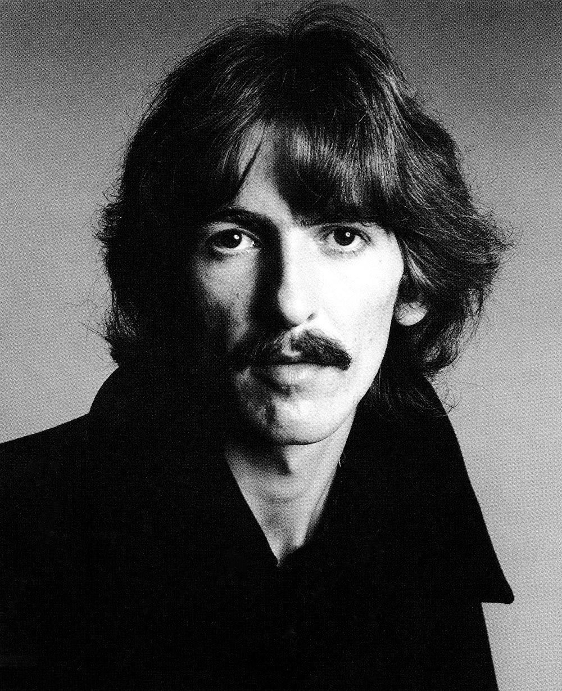
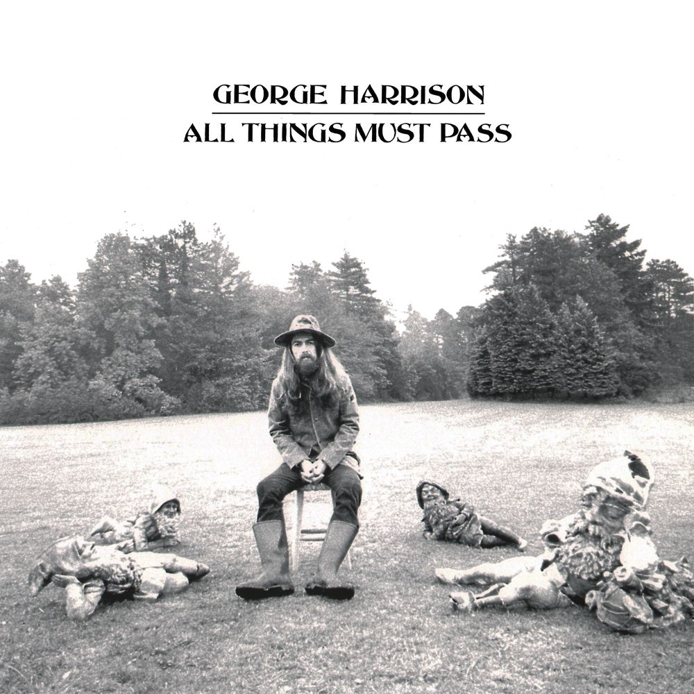

Who was George Harrison?
Was an English musician, singer-songwriter, music and film producer who achieved international fame as the lead guitarist of the Beatles. Often referred to as "the quiet Beatle", Harrison embraced Indian culture and helped broaden the scope of popular music through his incorporation of Indian instrumentation and Hindu-aligned spirituality in the Beatles' work. Although the majority of the band's songs were written by John Lennon and Paul McCartney, most Beatles albums from 1965 onwards contained at least two Harrison compositions. His songs for the group included "Taxman", "Within You Without You", "While My Guitar Gently Weeps", "Here Comes the Sun" and "Something".

All Things Must Pass
Is a song by English musician George Harrison, issued in November 1970 as the title track to his triple album of the same name. Billy Preston released the song originally as "All Things (Must) Pass" on his Apple Records album Encouraging Words (1970), after the Beatles had rejected it for inclusion on their Let It Be album in January 1969. The composition reflects the influence of the Band's sound and communal music-making on Harrison, after he had spent time with the group in Woodstock, New York, in late 1968, while Timothy Leary's poem "All Things Pass", a psychedelic adaptation of the Tao Te Ching, provided inspiration for his song lyrics.
Just shocking and beautiful.
Also the Album. Amazing. Sad.
